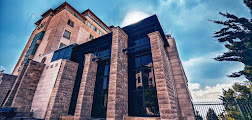
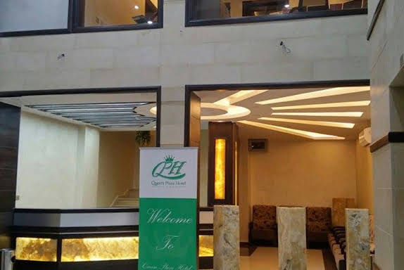
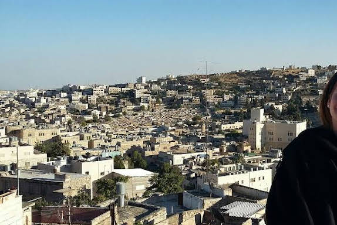

فندق ابو مازن
يقع هذا الفندق ذو التصميم البسيط في مبنى على طراز قلعة بالقرب من مركز تجاري
ويبعُد كيلومترَين عن البلدة القديمة و"كهف البطاركة" القديم و57 كيلومتر عن "مطار بن غوريون

فندق ريجنسي الخليل
موقع جيد بشكلٍ عام لمشاهدة المعالم السياحية والاستجمام وتناول الطعام والتجوّل
الخليل , رأس الجورة, مقابل مستشفى الميزان
موقعه الاكتروني

فندق كوين بلازا
يسعد طاقم الموظفين المضياف عند قسم الاستقبال المساعدة لدى وجود أي استفسار. تشمل التجهيزات والخدمات في الفندق حفظ أمتعة وخزينة ومكتب صرافة وصرافاً آلياً وآلة بيع مشروبات. تتوفر في المبنى إمكانية الاتصال بالواي فاي
فندق كوين بلازا يقع في منطقة عين سارة في مدينة الخليل، بالقرب من مطعم كنتاكي. الفندق يتميز بموقع مركزي في قلب المدينة، مما يجعله قريبًا من المرافق والخدمات الرئيسية
موقعه الاكتروني

Lamar Guest House
الفندق يوفر بيئة إقامة هادئة مع خدمات أساسية مثل واي فاي مجاني ومرافق استقبال متاحة 24 ساعة.
فندق Lamar Guest House يقع في الخليل، تحديدًا في شارع عين القرنة (Ein Al-Qurneh Street)، بالقرب من مناطق معروفة مثل حديقة النور ومرافق محلية أخرى
موقعه الكتروني